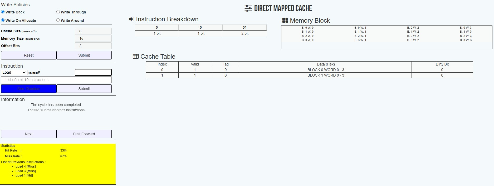
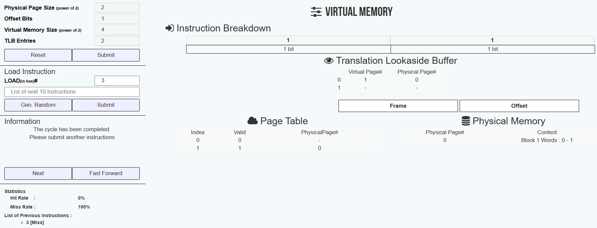

Nội dung các bài thực hành
Các bài thực hành sau đây giúp sinh viên hiểu rõ cách tổ chức và vận hành của ba cấp bộ nhớ chính trong
máy tính: bộ nhớ cache, bộ nhớ chính (RAM) và bộ nhớ ảo thông qua công cụ mô phỏng trực tuyến ParaCache.
Trình mô phỏng cho phép sinh viên quan sát cơ chế ánh xạ dữ liệu vào cache, so sánh các thuật toán thay
thế khối (LRU, FIFO, Random), và phân tích hiện tượng cache hit/miss. Đồng thời, mô phỏng cũng minh họa
rõ cách địa chỉ ảo được ánh xạ sang địa chỉ vật lý, từ đó giúp sinh viên hiểu vai trò của bộ nhớ chính và
bộ nhớ ảo trong quản lý phân trang. Nhờ giao diện trực quan và dễ thao tác, sinh viên có thể tiếp cận toàn
diện khái niệm bộ nhớ phân cấp mà không cần cài đặt phần mềm chuyên biệt.
Các bài thực hành Kiến trúc máy tính
-
Bài 1: Mô phỏng truy cập bộ nhớ chính và bộ nhớ Cache ánh xạ trực tiếp (Direct Mapped Cache)
- Cache Size → 8
- Memory Size → 16
- Offset Bits → 2
- Nhập lần lượt LOAD(in hex)# → 4, 3, 1

Cấu hình ban đầu
- Cache Size = 8 bytes → Cache có tổng dung lượng 8 bytes
- Memory Size = 16 bytes → Bộ nhớ chính có tổng dung lượng 16 bytes
- Offset Bits = 2 → Mỗi block có kích thước 22 = 4 bytes
- Cache có số dòng = 8 / 4 = 2 dòng
- Địa chỉ bộ nhớ tổng dài 4 bit (vì 24 = 16 địa chỉ)
- Tag bits = 4 - 2 (offset) - 1 (index) = 1 bit
Nhập lệnh truy cập lần lượt
- LOAD(in hex)# → 4
- LOAD(in hex)# → 3
- LOAD(in hex)# → 1
Phân tích từng truy cập
- a. Địa chỉ ảo nhập: 0x4 (hệ 16), bằng 4 (hệ 10), nhị phân (4 bit) là 0100
- Tách địa chỉ thành
- - Tag (1 bit) = 0
- - Index (1 bit) = 1
- - Offset (2 bit) = 00
- Tra cứu cache dòng có index = 1
- Cache lúc này trống → Cache Miss
- Nạp block chứa địa chỉ từ 0x4 đến 0x7 vào dòng 1
- Ghi tag = 0, valid bit = 1 cho dòng 1
- Kết quả: Cache dòng 1 cập nhật, CPU đọc dữ liệu sau khi nạp
- b. Địa chỉ ảo nhập: 0x3 (hệ 16), bằng 3 (hệ 10), nhị phân (4 bit) là 0011
- Tách địa chỉ thành
- - Tag (1 bit) = 0
- - Index (1 bit) = 0
- - Offset (2 bit) = 11
- Tra cứu cache dòng có index = 0
- Cache dòng 0 trống → Cache Miss
- Nạp block chứa địa chỉ từ 0x0 đến 0x3 vào dòng 0
- Ghi tag = 0, valid bit = 1 cho dòng 0
- Kết quả: Cache dòng 0 cập nhật, CPU đọc dữ liệu sau khi nạp
- c. Địa chỉ ảo nhập: 0x1 (hệ 16), bằng 1 (hệ 10), nhị phân (4 bit) là 0001
- Tách địa chỉ thành
- - Tag (1 bit) = 0
- - Index (1 bit) = 0
- - Offset (2 bit) = 01
- Tra cứu cache dòng 0
- Cache dòng 0 đã có tag = 0 và valid bit = 1 → Cache Hit
- CPU truy cập dữ liệu trực tiếp từ cache mà không cần nạp lại
Nhận xét
- Bài mô phỏng trên giúp sinh viên hiểu cơ chế bộ nhớ cache ánh xạ trực tiếp, cách chia địa chỉ thành
Tag, Index và Offset để truy xuất dữ liệu giữa cache và bộ nhớ chính. Sinh viên dễ nhận biết Cache
Miss khi dòng cache trống hoặc tag khác, buộc phải nạp block mới từ bộ nhớ chính, và Cache Hit khi
dữ liệu đã có sẵn. Việc dùng block 4 bytes giúp giảm số lần truy cập bộ nhớ chính, nâng cao hiệu
suất. Đồng thời, bài thể hiện nguyên lý ánh xạ trực tiếp và hạn chế xung đột cache trong thực tế.
-
Bài 2: Mô phỏng bộ nhớ ảo hãy nhập địa chỉ (dạng hex, ví dụ 0x3) để quan sát dịch địa chỉ qua TLB
- Physical Page Size → 2
- Offset Bits → 1
- Virtual Memory Size → 4
- TLB Entries → 2
- LOAD(in hex)# → 3

Cấu hình ban đầu
- Physical Page Size = 2 → mỗi trang vật lý có kích thước 22 = 4 byte
- Offset Bits = 1 → offset trong trang dùng 1 bit (2 byte/trang)
- Virtual Memory Size = 4 → tổng số địa chỉ ảo là 24 = 16 địa chỉ (từ 0 - 15)
- TLB Entries = 2 → TLB chứa tối đa 2 ánh xạ
Nhập địa chỉ ảo LOAD(in hex)# = 3
- Địa chỉ ảo nhập: 0x3 (hệ 16), bằng 3 (hệ 10)
- Địa chỉ ảo dạng nhị phân: 0011
Tách địa chỉ ảo thành VPN và Offset
- Offset Bits = 1 → lấy 1 bit cuối của 0011 → Offset = 1
- Phần còn lại là VPN = 01 → số 1 (thập phân)
Tra cứu TLB
- Ban đầu TLB trống → không có ánh xạ cho VPN = 1 → TLB Miss
- Mô phỏng báo TLB Miss và số lượng miss tăng
Tra bảng trang (Page Table)
- Trang ảo 1 có Valid = 1 → hợp lệ
- PPN = 0 → ánh xạ trang ảo 1 sang trang vật lý 0
- Cập nhật TLB: VPN 1 → PPN 0
Tính địa chỉ vật lý (Physical Address)
- Công thức: PPN × Page Size + Offset
Ở đây: PPN = 0, Page Size = 2 (21 vì offset bits = 1), Offset = 1
- → Physical Address = 0 × 2 + 1 = 1
Nhận xét
- Bài mô phỏng này giúp sinh viên làm rõ cơ chế hoạt động của bộ nhớ ảo, nơi địa chỉ ảo do CPU phát
ra được chuyển thành địa chỉ vật lý thông qua bảng trang và TLB. Thông qua ví dụ cụ thể với địa chỉ
ảo 0x3, sinh viên có thể quan sát quá trình phân tách địa chỉ thành VPN và Offset, TLB Miss, tra
bảng trang và tính địa chỉ vật lý tương ứng. Mô phỏng này giúp sinh viên hiểu vai trò của bộ nhớ ảo
trong việc quản lý không gian địa chỉ hiệu quả và đảm bảo tính bảo vệ trong hệ thống máy tính.
← Quay lại Trang chủ